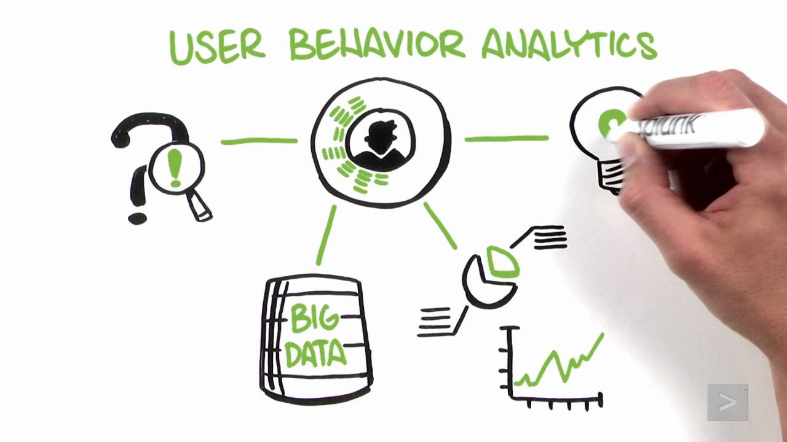
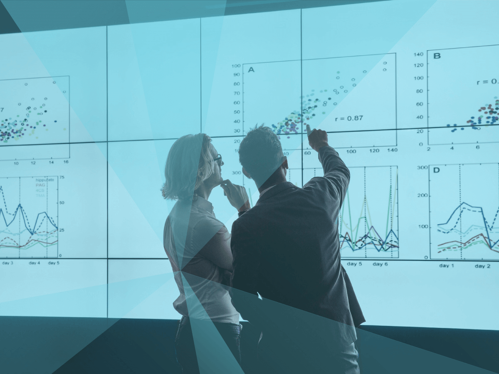

IT Technologies
Areas:
Cybersecurity
What does it do?
Cyber security refers to the standards, technological answers and procedures that are utilised to help defend your device and network from any digital attacks - and therefore protect your personal data from unauthorised access, as well as prevent damage to your system (Microsoft security n.d.).
What is the state of the art of this new technology? What can be done now?
Behavioural analytics (also called UEBA, User and Entity Behavioural Analytics) is a new cyber security technology (Simmons 2022):
Behavioural analytics refers to machine learning algorithms which show how people act on systems, websites, networks and apps, in order to determine patterns in behaviour (also called a behaviour profile). It is employed by cyber security professionals, since strange occurrences and actions that deviate from usual patterns in behaviour can be used to identify possible vulnerabilities and threats that were not detected by protective technologies (Simmons 2022). It is also used alongside SIEM (Security Information Event Management), which prioritises sending out major security alerts (Serna 2022).
 Image provided by: Splunk, 2016
Behavioural analytics can be used to detect abnormal quantities of data coming from one device – potentially indicating that a cyberattack is currently occurring or will likely happen (Simmons 2022). It can also be used to recognise malicious activity via it finding oddly timed events and actions happening in a strange order and determine if other devices have been accessed and infected (Simmons 2022).
When an analyst establishes what unusual behaviours to include in events for UEBA, they have to think of the possible indicators of intent, create behaviour outcomes for each indicator, and then convert each scenario into a rule (Lin 2022). A rule, in turn, is triggered when the current behaviour of a user doesn’t match up with their respective behaviour profile (Lin 2022). When a rule is triggered, it will have a risk score for the behaviour scenario(s) that occurred in that rule - with the risk score indicating the severity of the threat (Lin 2022). This all establishes a baseline of what is normal for each user, in combination with the information regarding their previous digital activity (Lin 2022).
Indicators:
A.‘Is this the first time the user accesses the asset?’ (Lin 2022) Behaviour scenarios turned into a rule:
B. ‘Is this the first time the user’s peer group accesses the asset?’ (Lin 2022)
C. ‘Is the asset privileged?’ (Lin 2022)
D. ‘Is this a remote access event?’ () (Lin 2022)
What is likely to be able to do be done soon (say in the next 3 years)?
Predictive analytics could be utilised to improve a company’s cyber insurance by determining the level of financial coverage that a company may need through predicting the likelihood of attacks (Flynn 2022).
Moreover, it is difficult to manually specify all of the permutations of indicators and scores - so the future of UEBA involves letting the machine generate the indicator combinations and scores, therefore saving time that would have been wasted copying and pasting one rule by hand to create another more complex rule (Lin 2022).
As such, letting the machine manage the indicator permutations means that there will be less errors with the rule generation and that the user focuses only on creating the indicators – which also means that the machine will be capable of creating more rules and therefore provide more risk coverage than when the rule creation was solely managed by humans (Lin 2022). Furthermore, machines will be able to automatically designate a risk score to each behavioural outcome (Lin 2022).
What technological or other developments make this possible?
These developments in UEBA will be made possible by improvements in machine learning (Lin 2022). Additionally, predictive analytics is made possible through data mining statistics, AI machine learning and predictive modelling (Schmidt 2021).
What is the likely impact? (300 words) What is the potential impact of this development?
The Standard and Poor’s Corp’s report predicts that the cyber insurance market will experience an average growth of around 20-30% per year, due to businesses likely increasing their usage of predictive analytics as a result of the cybersecurity risks posed by their increased dependence on IoT (Internet of things) (Golan 2021). Also, distributors may end up using predictive analytics to prevent fraud and counterfeit products (Roy 2021).
What is likely to change?
Since the cyber insurance industry will grow due to predictive analytics, there will be stronger regulations regarding cybersecurity (eg. regulations may state that it is compulsory for businesses to have cyber insurance and therefore use predictive analytics) (Golan 2021).
Cyber insurance companies may run data breach drills/exercises based on the attack outcome(s) that predictive analytics determine is or are most likely to happen. In addition, predictive analytics will enable businesses to have more time preparing to defend themselves against the most likely cyber attack outcomes (Butler 2022).
There will be more distributors using predictive analytics to ensure customer safety - it could become a standard business practice (Golan 2021).
Which people will be most affected and how? Will this create, replace or make redundant any current jobs or technologies?
Everyone will be affected by the implementation of predictive analytics as a likely standard business practice in the future (eg. business distributors using predictive analytics to prevent fraud and counterfeit products increases customer safety) (Golan 2021).
While machine learning in UEBA may take on more responsibilities regarding rule generation and indicator combinations, a completely machine-driven UEBA will never completely replace cybersecurity employees (Cetark Corp 2022). This is because machine learning lacks creativity, contextual awareness, emotional intelligence (EI) and compassion (which is important, as cyber security professionals need to understand the human motivations behind data breaches), and the ability to make ethical decisions since they do not experience human empathy or have EI (Cetark Corp 2022).
 Image provided by: Graves, 2019
Henceforth, the greater dependence on UEBA and predictive analytics will actually increase the need for cybersecurity professionals (Doshi 2021). Indeed, Cybersecurity Ventures found that the number of empty cyber security jobs has grown by 350%, from 1 million in 2013 to 3.5 million in 2021 - which indicates that the cybersecurity industry will keep on growing in the future (Doshi 2022). However, the increasing sophistication of UEBA means that some companies may decide to not have as many IT cyber security analysts (Fortinet n.d.).
Since the cyber insurance industry will grow, there will be more job openings (eg. IT systems analyst and operations analyst) (Indeed 2021).
However, the increasing cybersecurity demand means that there will be more unfilled jobs, which in turn means that the current cybersecurity employee burnout will increase - unless the demand for cybersecurity is met (Doshi 2022). Indeed, the 2021 data from a Forrester survey revealed that 65% of cyber security employees stated that the stress of their job was so severe that they considered leaving - and that 51% of the respondents went through severe stress and burnout (Doshi 2022).
How will this affect you? (300 words) In your daily life, how will this affect you? What will be different for you?
Distributors using predictive analytics to minimise the risk of customers being exposed to counterfeit goods means that I will be more confident in purchasing and using products now that I have the extra assurance that predictive analytics prevents the risk of them being counterfeit.
How might this affect members of your family or your friends?
If distributors do not use predictive analytics, this means that the risk of counterfeit goods may increase - resulting in my friends and family who would or may be working with distributed goods being potentially exposed to potentially dangerous products at their work environments, as these fake goods would not have gone through the correct testing procedures (Harris 2020). This means that the companies that they work at, who bought those goods, may lose financial revenue and potentially go bankrupt - with the lost financial revenue resulting in lower salaries, and possibly being laid off by their bankrupt companies (Selvaratnam 2022).
In addition, businesses may lose revenue as a result of lost customer confidence due to the counterfeit goods, and they may have to spend a lot of money on repair fees, as well as on government fines - they may also experience government penalties that would restrict their ability to grow as a business (Harris 2020).
Also, my friend and family may come across or buy counterfeit goods (eg. food, electronics, clothing) from stores in their everyday life - resulting in them potentially also being exposed to unsafe products that have not been tested correctly because they are fakes (Harris 2020).
Since the counterfeit goods has not gone through any testing processes, they have the risks of: catching on fire; not working correctly in certain temperature ranges (eg. extreme heat and cold); have a short life expectancy; containing cancer-causing agents and lead-based parts, etc (Harris 2020).
However, distributors in businesses deploying predictive analytics to strengthen their cybersecurity would greatly minimise the risk of this occurring to my family and friends (Giordani 2022).
Blockchain
What does it do?
Blockchain, also referred to as Distributed Ledger Technologies (DLT), is a platform that stores records of transactions and data without allowing for their editing or deletion (HAYES, BROWN and KVILHAUG, 2022). The blockchain network is based on a decentralised network, which means that there is no governing figure in the network with extra authority over others. With a decentralised network, everyone on the blockchain has access to the latest data and can see the exact creation data of the block, regardless of where they are or who they are (HAYES, BROWN and KVILHAUG, 2022). A blockchain's information must be shared and linked across all its users (nodes) for the platform to exist. Because there isn't a single blockchain platform (Bitcoin, Ethereum, or Hyperledger), each has its means of interacting and carrying out specific operations.
The following are what most blockchain platforms have:
- Peer 2 Peer Network: a peer to peer network consists of nodes, also known as "Peers", which constantly share data and create copies of the information in the network.
- Each platform will have its own consensus mechanisms taken place between its peers to ensure everyone agrees on the same rules on the blockchain. Proof of Work, Authority, and Stake are some of the most common consensus mechanisms used today.
- Immutable Ledger: any information that gets added to the blockchain cannot be edited or changed.
What is the state of the art of this new technology? What can be done now?
The most recent use of blockchain that the world's largest companies are working on is the use of blockchain technology in the supply chain network (Fong, n.d.). For an item or product to get delivered to the end consumer, it must first go through multiple parties (Manufactures, Warehouses, Logistics). As this process is complex, the end-user doesn't know whether the product they received is genuine and hasn't been tampered with. If the item is faulty or causes a dangerous situation to the consumer, organisations will need to trace it back to see where in the process it went wrong. Oftentimes tracing back the problem in the supply chain can take months and costs organisations millions. By utilising the power of blockchain, companies in the same industry have had the opportunity to come together to create a solution where you can trace back exactly where it went wrong. This is done by creating a shared blockchain network where companies input or scan non-confidential data into a database. Each of the companies involved in the blockchain network has access to the same data and cannot tamper with the data later. Some companies have confidential data they don't want to share with their competitors, stopping them from working together. However, thanks to new blockchain technology (e.g. Mediledgers parity Ethereum), when another company in the same network asks for confidential information, it can be communicated using private tokens and smart contracts. Now, when something needs to be traced back in the supply chain, it can be seen through the immutable log. If consumers want to see whether their product is genuine and where it has gone through in the supply chain, they can access a public version of it and see exactly.
What is likely to be able to do be done soon (say in the next 3 years)?
Blockchain technology can be more widely available and expanded into several different industries in the next couple of years. These industries include Real estate for verifying customer information and previous rental history—Healthcare for easier access to real-time, up-to-date data of patients' medical history (Levy, 2022), and art for verifying true ownership of the material and ensuring intellectual property if met. These are one of many real use cases that will be available to consumers and businesses in the near future.
What is the likely impact?
Blockchain technology will significantly impact how businesses can access accurate and up-to-date data on their operations and customers. This can be seen through the many initiatives that have arisen as a result of new blockchain technological developments. An example of a blockchain network that has significantly impacted the pharmaceutical supply chain is Mediledger's parity Ethereum client-backed platform. This new technology allows USA's largest pharmaceutical companies to come together to help fight against fake drugs going through the supply chain and easily track where or who caused them. An initiative like this has had a significant impact on fighting against counterfeit drugs going through to end consumers and ensuring they have complete trust in each other. Furthermore, by being able to keep easier track of all of the supply chain processes, pharmaceutical companies can reduce the costs involved with the production and make the medicines cheaper for consumers.
Another major impact of blockchain technology will have on how banks provide loans to aspiring house owners. In the current process, for an aspiring homeowner to get a loan, they must each time go through providing personal information, professional information, income information etc. which is a large amount of paperwork for the people involved and time. With a blockchain solution, banks can immediately access the latest information of the person applying and inform every third party involved in the loaning process through the blockchain network. Currently, this initiative hasn't been looked into thoroughly; however, Celcius has started something similar through p2p lending. Currently, it's not looking like banks may switch to this technological solution soon since it can cost a lot to go from their current systems to their new ones (Home Loan Expert, n.d). The new technology can also have a negative impact on mortgage broker workers who may lose their job as the blockchain solution finds lenders much easier.
How will this affect you? In your daily life, how will this affect you? What will be different for you? How might this affect members of your family or your friends?
Currently, blockchain technology is mostly used in the government industry, healthcare and real estate industry, and as more businesses learn to adopt blockchain technology, it will make drastic changes to our daily lives. For example - the Healthcare industry with customer, medicine data, etc. and the Realestate industry with home loans and their process.
Healthcare
With the further implementations of blockchain technology in healthcare, we will have a feeling of safety when taking medicines as the blockchain database would let us track its origins. Additionally, healthcare organisations will be able to easily track our data and details provided by the doctor through mobile applications.
In the near future, healthcare will also be accessible and affordable through the use of ( AI and Blockchain ). This means that the trips to clinics will be significantly reduced as the AI will be able to diagnose the patient by analysing the symptoms provided by us.
Real estate
The current home loan granting system requires a few months to process, even with the broker assisting us every step of the process when acquiring necessary documents. The integration of blockchain technology into real estate operations will allow us to save both time and money by assisting us in identifying the loan providers using our credit score. Additionally, it would also assist us in other processes, such as gathering documents and even providing the full application to other lenders, instead of going through the months-long loan approval process each time.
In conclusion, the integration of blockchain technology in the healthcare and real estate industry will most definitely have a significant impact on our daily lives as we will be able to save both money and time.
Machine Learning
Machine learning is an AI software that allows for accurate predictions/outcomes without explicit programming. Utilising algorithms with the use of historic data input to generate new output values. Machine learning solutions are increasingly common in our daily lives and continue to incorporate improvements into businesses' basic operations. According to Fortune Business Insights (2022), “the market for machine learning will increase from $8.43 billion in 2019 to $117.19 billion in 2027.” There is frequent conceptual equivalence between the phrases artificial intelligence and machine learning. Considering that machine learning is actually a branch of artificial intelligence. utilizing an algorithm that learns from data and makes judgments with little to no human interaction. Due to their huge potential to provide more accurate predictions and business judgments, many companies have already begun utilizing machine learning algorithms. Given that machine learning companies will receive $3.1 billion in funding by 2020, it is obvious that machine learning has the capacity to bring about dramatic changes across industries(Zhydik, 2021).
Case Studies:
- Deep fakes
A form of synthetic media where a person’s existing image or video with another’s likeness
- PIFu
A machine learning 3D modelling software that translates image or video into feasible 3D models
- AI Art
High fidelity artwork generated by machine learning and a large deposit of existing artworks
- DALL E
An image generator using text as a jumping point to generate a relative image
- GiraffeHD
A high resolution 3D aware generative model
- Houdini
Procedural level design tool creating AI generated landscapes for virtual spaces
- Interpolation
Inbetweening or filling in between keyframes in animation
Future developments towards machine learning may inevitably lead to high fidelity outcomes, in terms of graphics, feasibility interactively, and so on. Machine learning may even evolve so much as to replace the work of artists and graphic designers. Animators and 3D modellers may also become obsolete when machine learning reaches this point; matching the skillset of digital artists.
“Any Technology that makes things better, faster or cheaper will eventually become standard.”
A more optimistic view and use of this technology is the use of AI generation to help generate ideas, boosting creativity. It has been shown that 50-70% of art development is spent during the planning and ideation stages, this new technology could usher in efficient time saving for the creative process. Most machine learning tools still require existing art or the integrating real artwork to create desired outcomes, therefore artists may not be entirely obsolete. The most at risk jobs would likely be those that are more labour intensive, narrow skilled and repetitive ie: Mocap cleaning, Rotoscoping, Mesh cleaning, Brainstorming, etc. Which effectively AI can work in place of said jobs which are often outsourced manual labour. Safe occupations are those requiring critical thinking, a broad range of skills, and specialization, such as Art direction, Project management, Programmers, Freelancers, etc.
The development of quantum computing may improve the capabilities of machine learning. allowing the execution of multiple operations in parallel to process data more quickly. In 2019, Google's quantum processor completed a feat that would have taken the fastest supercomputers 10,000 years to accomplish. Data analysis using quantum machine learning may produce deeper insights. Compared to more conventional machine learning techniques, firms can get greater results with this boost in performance. Although there are currently no commercially accessible quantum computers, some well-known tech businesses are still making investments in this novel technology, and quantum machine learning is soon to follow.
The healthcare industry constantly produces sizable data which machine learning can better optimise predictions and treatments. Improvements in both prediction and prevention to possible disease as opposed to treatment after diagnosis. This analysis on wider variables from studies, patient demographics, health records can result in better disease prediction compared to more traditional methods consisting of limited variables age, weight, height and gender. Resulting in inefficient use of resources being more time consuming and costly with recent studies reveal the average cost of drug production to an upwards of $985 million. Datasets on chemical structure for drugs can also allow machine learning algorithms to predict the impact a single medicinal molecule might have on certain gene and cell types in order to determine any adverse effects. Accelerating drug testing to reduce time and cost of producing new drugs to the market.
Manufacturers are only in the early stages of adopting machine learning. In 2020, only 9% of survey respondents were leveraging artificial intelligence in their business processes. Applying machine learning tools in manufacturing, you can facilitate various processes and operations, including monitoring equipment performance and condition, predicting product quality and forecasting energy consumption. With the ongoing advancements in the field of machine learning, we can expect more robots in manufacturing premises in the near future. Among many other benefits, using machine learning in manufacturing can reduce costs, enhance quality control and improve supply chain management.
Robots
What does it do?
When we think of robots, we fantasise about humans like machines that can do whatever task we assign them to. However, the reality is that robots are already part of our lives, and they look nothing like we think. In our society, there are machines that can converse with us, listen to us, carry out our instructions, and even solve issues on their own without the assistance of people. For example, vacuum cleaner robots, kitchen robots, Siri, Alexa and many more. Robots are mainly created as a more efficient alternative for manual labour. This is because it's cheaper to use them than humans, they work without the need for breaks, and they do not get bored. Robots are used in many other ways. Sometimes they are the only possible solution to get extremely dangerous work done. For example, work inside volcanoes or deep in the ocean. (sparklight, 2022)
The development of robotics has been tremendous in recent years. We now have access to nanorobots, Robots in space, and AI (artificial intelligence) in robotics. Robots in space can collect samples, explore, survive and report findings back to us. This allows us to make the next leap in space travel and migration to another planet. All of this can be done right back on earth where it is safer for humans. (sparklight, 2022) The most intriguing technology is AI. AI allows us to integrate and develop in different types of industries. For example, perform surgery, logistics, read human expressions, create unique exercise plans, develop music, fly drones, cook, and much more. These types of activities can be carried out using AI. AI allows robotic software to learn, solve and perform actions that are above human capabilities. (Lincoln, 2018)
The most anticipated technology would be nanorobotics. Nanotechnology had existed since 1959, introduced by famed physicist Richard Feynman. Now years later nanotechnology introduced nanorobotics. Robots can achieve impressive feats, but they can't be compared to what nanorobots can do. They are currently a vital part of our future healthcare, infrastructure, big data and addressing climate change. Most incredible technology that is in the making, the prototype of an electric tattoo that will act as a sensor for our vital signs. Currently they are working on creating a smaller version of this device as a nanorobot that can be injected into our body. This will allow doctors to collect more detailed information specific to each patient, which will lead to a huge drop in medical risk. These nanorobots don’t stop at just being sensors but can be used for endless possibilities such as forcefully controlling organs within our body, minuscular surgery, after-surgery recovery and many more. The nanorobots are created from a mix of bioelectronics and nanotechnology. It involves a combination of software engineering, bio engineering and medical expertise. (Prodromakis, 2016)
What is the likely impact?
According to Choudhuri & Deb (2020), Nanorobots will become the future of medical practice. Nanobots will bring about a new era which will be about targeted approach to medicine, which will be brought about with how nanobots are able to travel to inaccessible parts of the body by travelling in vivo (inside the body) – areas that cannot be reached by the current medicine/technology in place (Burton, 2022). Based on Choudhuri & Deb (2020) research, nanobots will be extremely precise, robust and smart when treating a disease and they can also be guided from outside. These nanobots will be able to even perform surgery one day (Choudhuri & Deb, 2020).
The people affected the most will be the patients or consumers and that would be a positive effect. Consumers will no longer be needed to take medication and hope it will reach where it is supposed to. Nanobots will be able to travel around the body carrying the medicine to the targeted site. The human body is a very complicated. For a nanobot to make its own decisions alone inside the body, to differentiate between foe and friend would be very tedious. Humans will always be needed in the medical field. Nanobots will not replace any jobs in the field, but I believe will create more job openings on monitoring nanobots inside a body to ensure the detections and inspections inside the human body are accurate.